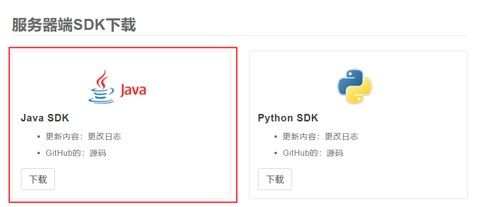

本篇集成为web项目手动集成JPush
https://docs.jiguang.cn
成为极光用户创建一个应用拿到(AppKey、Master Secret)，官网上有很详细的教程
https://docs.jiguang.cn//jpush/resources/

<dependency>
<groupId>com.google.code.gson</groupId>
<artifactId>gson</artifactId>
<version>2.3</version>
</dependency>到这里就集成完毕了，下面看代码
package pms.schedul;
import java.util.Map;
import cn.jiguang.common.resp.APIConnectionException;
import cn.jiguang.common.resp.APIRequestException;
import cn.jpush.api.JPushClient;
import cn.jpush.api.push.PushResult;
import cn.jpush.api.push.model.Message;
import cn.jpush.api.push.model.Options;
import cn.jpush.api.push.model.Platform;
import cn.jpush.api.push.model.PushPayload;
import cn.jpush.api.push.model.audience.Audience;
import cn.jpush.api.push.model.notification.AndroidNotification;
import cn.jpush.api.push.model.notification.IosNotification;
import cn.jpush.api.push.model.notification.Notification;
public class JiguangPush {
//从官网获取的APP_KEY 与 MASTER_SECRET
private static String APP_KEY = "fe78b87efa0364460541388b";
private static String MASTER_SECRET = "048732da19dc885ee469553f";
//极光推送>>Android
//parm 参数:registrationId设备唯一标识 title推送标题 msg推送消息体
public static void jpushAndroid_registrationId(Map<String, String> parm) {
//创建JPushClient(极光推送的实例)
JPushClient jpushClient = new JPushClient(MASTER_SECRET, APP_KEY);
//推送的关键,构造一个payload
PushPayload payload = PushPayload.newBuilder()
.setPlatform(Platform.android())//指定android平台的用户
.setAudience(Audience.registrationId(parm.get("id")))//registrationId指定用户
.setNotification(Notification.android(parm.get("msg"), parm.get("title"), parm))
//发送内容
.setOptions(Options.newBuilder().setApnsProduction(false).build())
//这里是指定开发环境,不用设置也没关系
.setMessage(Message.content(parm.get("msg")))//自定义信息
.build();
try {
PushResult pu = jpushClient.sendPush(payload);
} catch (APIConnectionException e) {
e.printStackTrace();
} catch (APIRequestException e) {
e.printStackTrace();
}
}
//极光推送>>All所有平台
//parm 参数:registrationId设备唯一标识 msg推送消息体
public static void jpushAll(Map<String, String> parm) {
//创建JPushClient
JPushClient jpushClient = new JPushClient(MASTER_SECRET, APP_KEY);
//创建option
PushPayload payload = PushPayload.newBuilder()
.setPlatform(Platform.all()) //所有平台的用户
//.setAudience(Audience.all())//你项目中的所有用户
.setAudience(Audience.registrationId(parm.get("id")))//registrationId指定用户
.setNotification(Notification.newBuilder()
.addPlatformNotification(IosNotification.newBuilder() //发送ios
.setAlert(parm.get("msg")) //消息体
.setBadge(+1)
.setSound("happy") //ios提示音
.addExtras(parm) //附加参数
.build())
.addPlatformNotification(AndroidNotification.newBuilder() //发送android
.addExtras(parm) //附加参数
.setAlert(parm.get("msg")) //消息体
.build())
.build())
.setOptions(Options.newBuilder().setApnsProduction(true).build())//指定开发环境 true为生产模式 false 为测试模式 (android不区分模式,ios区分模式)
.setMessage(Message.newBuilder().setMsgContent(parm.get("msg")).addExtras(parm).build())//自定义信息
.build();
try {
PushResult pu = jpushClient.sendPush(payload);
System.out.println(pu.toString());
} catch (APIConnectionException e) {
e.printStackTrace();
} catch (APIRequestException e) {
e.printStackTrace();
}
}
}
@Test
public void pushtest() {
//自定义推送参数
Map<String, String> parm = new HashMap<String, String>();
//这里的id是,移动端集成极光并登陆后,极光用户的rid
parm.put("id", "140fe1da9ef42763ee7");
parm.put("title", "厉害哟!");
//设置提示信息,内容是文章标题
parm.put("msg","极光集成成功!");
JiguangPush.jpushAndroid_registrationId(parm);
}完美~~~